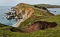

land
phenomenon

Source: Wikipedia
Wikipedia Page (Something wrong with this association? Let us know.)
Wikidata Page (Something wrong with this association? Let us know.)
Occurs in:
- model_simulation_land_crop_allocation__area
- model_simulation_land_crop__mass-per-area_yield
- model_simulation_land_nitrogen-fertilizer_application__mass-per-area_density
- land_surface_water_evapotranspiration__mass_flux
- land_surface__upward_component_of_sensible_heat_energy_flux
- land_surface__upward_component_of_latent_heat_energy_flux
- land_surface__effective_radiative_temperature
- land_subsurface_water_runoff__mass_flux
- land_surface_air_radiation~longwave~downwelling__energy_flux
- land_surface_air_radiation~longwave~downward__energy_flux
- land_surface_air_radiation~shortwave~downwelling__energy_flux
- land_surface_soil_water__volume_fraction
- land_surface~0-to-10cm-below_soil_water__volume_fraction
- land_surface~100-to-200cm-below_soil_water__volume_fraction
- land_surface~10-to-40cm-below_soil_water__volume_fraction
- land_surface~40-to-100cm-below_soil_water__volume_fraction
- land_surface~0-to-100cm-below_soil_water__volume_fraction
- land_surface~0-to-10cm-below_soil__temperature
- land_surface~100-to-200cm-below_soil__temperature
- land_surface~10-to-40cm-below_soil__temperature
- land_surface~40-to-100cm-below_soil__temperature
- land_surface_radiation~shortwave~downward__energy_flux
- observation_land_crop_allocation__area
- observation_land_crop__mass-per-area_yield
- land_crop_production__cost-per-area
- land_surface_wind__speed
- land_vegetation_canopy_water_interception__storage_factor
- soil_macropores_below-land_surface__depth
- water_below-land_surface__depth
- land_subsurface_aquifer~left_river_channel_bed_water__volume_flux
- land_subsurface_aquifer~right_river_channel_bed_water__volume_flux
- land_surface_snow_accumulation__time_integral_of_volume_flux
- land_surface_terrain~left_stream_channel_reach_water__volume_flux
- land_surface_terrain~right_stream_channel_reach_water__volume_flux
- land_vegetation_canopy_water_evaporation__volume_flux
- atmosphere_bottom_air_land__incoming_component_of_latent_heat_energy_flux
- atmosphere_bottom_air_land__incoming_component_of_sensible_heat_energy_flux
- atmosphere_bottom_air_land__net_latent_heat_energy_flux
- atmosphere_bottom_air_land__net_sensible_heat_energy_flux
- drainage-basin_land~burned__area_fraction
- drainage-basin_land~forested__area_fraction
- bedrock_below-land_surface__depth
- earth_surface_land__area_fraction
- land-or-sea_surface_radiation~incoming~shortwave__energy_flux
- land_domain_boundary_lowering__elevation_rate
- land_subsurface_phreatic-zone_top__depth
- land_subsurface_phreatic-zone_top__elevation
- land_subsurface_water_phreatic-zone_top__depth
- land_surface__albedo
- land_surface__anomaly_of_temperature
- land_surface__aspect_angle
- land_surface__domain_max_of_elevation
- land_surface__domain_max_of_increment_of_elevation
- land_surface__domain_min_of_elevation
- land_surface__domain_min_of_increment_of_elevation
- land_surface__domain_range_of_elevation
- land_surface__domain_time_max_of_elevation
- land_surface__domain_time_min_of_elevation
- land_surface__elevation
- land_surface__emissivity
- land_surface__gaussian_curvature
- land_surface__increment_of_elevation
- land_surface_water_infiltration__length-per-time_rate
- land_surface__initial_elevation
- land_surface__laplacian_of_elevation
- land_surface__latitude
- land_surface__longitude
- land_surface__max_of_normal_curvature
- land_surface__mean_of_curvature
- land_surface__min_of_normal_curvature
- land_surface_plan__curvature
- land_surface_profile__curvature
- land_surface__slope
- land_surface__slope_angle
- land_surface__specific_contributing_area
- land_surface_streamline__curvature
- land_surface_sunshine__duration
- land_surface__tangential_curvature
- land_surface__temperature
- land_surface__thermal_inertia
- land_surface__time_derivative_of_elevation
- land_surface__time_max_of_elevation
- land_surface__time_min_of_elevation
- land_surface__topographic_wetness_index
- land_surface__x_derivative_of_elevation
- land_surface__x_derivative_of_slope
- land_surface__x_x_derivative_of_elevation
- land_surface__x_y_derivative_of_elevation
- land_surface__y_derivative_of_elevation
- land_surface__y_derivative_of_slope
- land_surface__y_y_derivative_of_elevation
- land_surface_air__pressure
- land_surface_air__temperature
- land_surface_air_flowing__speed
- land_surface_air__incoming_component_of_latent_heat_energy_flux
- land_surface_air__incoming_component_of_sensible_heat_energy_flux
- land_surface_air__net_latent_heat_energy_flux
- land_surface_air__net_sensible_heat_energy_flux
- land_surface_base-level__elevation
- land_surface_base-level__initial_elevation
- land_surface_base-level__time_derivative_of_elevation
- land_surface_contour_segment__contributing_area
- land_surface__net_energy_flux
- land_surface_polygon__contributing_area
- land_surface_radiation~incoming~longwave~absorbed__energy_flux
- land_surface_radiation~incoming~longwave_absorption__absorptance
- land_surface_radiation~incoming~longwave_emission__emittance
- land_surface_radiation~incoming~longwave__energy_flux
- land_surface_radiation~incoming~longwave_reflection__reflectance
- land_surface_radiation~incoming~longwave~reflected__energy_flux
- land_surface_radiation~incoming~shortwave~absorbed__energy_flux
- land_surface_radiation~incoming~shortwave_absorption__absorptance
- land_surface_radiation~incoming~shortwave~backscattered__energy_flux
- land_surface_radiation~incoming~shortwave~diffuse__energy_flux
- land_surface_radiation~incoming~shortwave~direct__energy_flux
- land_surface_radiation~incoming~shortwave__energy_flux
- land_surface_radiation~incoming~shortwave__one-hour_time_integral_of_energy_flux
- land_surface_radiation~incoming~shortwave_reflection__reflectance
- land_surface_radiation~incoming~shortwave~reflected__energy_flux
- land_surface_radiation~incoming~absorbed__energy_flux
- land_surface_radiation~incoming_absorption__absorptance
- land_surface_radiation~incoming__energy_flux
- land_surface_radiation~incoming_reflection__reflectance
- land_surface_radiation~incoming~reflected__energy_flux
- land_surface_radiation~net~longwave__energy_flux
- land_surface_radiation~net~shortwave__energy_flux
- land_surface_radiation~net__energy_flux
- land_surface_radiation~outgoing~longwave_emission__emittance
- land_surface_radiation~outgoing~longwave~emitted__energy_flux
- land_surface_radiation~outgoing~longwave__energy_flux
- land_surface_soil_conduction__heat_energy_flux
- land_surface_transect__contributing_area
- land_surface_water_baseflow__mass_flux
- land_surface_water_baseflow__volume_flux
- land_surface_water__depth
- land_surface_water_baseflow__domain_time_integral_of_volume_flux
- land_surface_water_evaporation__domain_time_integral_of_volume_flux
- land_surface_water_runoff__domain_time_integral_of_volume_flux
- land_surface_water__east_derivative_of_depth
- land_surface_water__east_derivative_of_pressure_head
- land_surface_water_evaporation__mass_flux
- land_surface_water_evaporation__volume_flux
- land_surface_water_infiltration_ponding__depth
- land_surface_water_infiltration_ponding__time
- land_surface_water__north_derivative_of_depth
- land_surface_water__north_derivative_of_pressure_head
- land_surface_water_evaporation__potential_volume_flux
- land_surface_water__priestley-taylor_alpha_coefficient
- land_surface_water_runoff__mass_flux
- land_surface_water_runoff__volume_flux
- land_surface_water__time_derivative_of_depth
- land_surface_water__time_derivative_of_pressure_head
- land_surface_water__x_derivative_of_depth
- land_surface_water__x_derivative_of_pressure_head
- land_surface_water__y_derivative_of_depth
- land_surface_water__y_derivative_of_pressure_head
- land_surface_water_flowing__azimuth_angle_of_velocity
- land_surface_water_flowing__azimuth_angle_of_z_integral_of_velocity
- land_surface_water_flowing__depth
- land_surface_water_flowing__down_component_of_velocity
- land_surface_water_flowing__east_component_of_velocity
- land_surface_water_flowing__east_component_of_z_integral_of_velocity
- land_surface_water_flowing__east_derivative_of_east_component_of_z_integral_of_velocity
- land_surface_water_flowing__east_derivative_of_north_component_of_z_integral_of_velocity
- land_surface_water_flowing__elevation_angle_of_velocity
- land_surface_water_flowing__magnitude_of_z_integral_of_velocity
- land_surface_water_flowing__north_component_of_velocity
- land_surface_water_flowing__north_component_of_z_integral_of_velocity
- land_surface_water_flowing__north_derivative_of_east_component_of_z_integral_of_velocity
- land_surface_water_flowing__north_derivative_of_north_component_of_z_integral_of_velocity
- land_surface_water_flowing__speed
- land_surface_water_flowing__time_derivative_of_down_component_of_velocity
- land_surface_water_flowing__time_derivative_of_east_component_of_velocity
- land_surface_water_flowing__time_derivative_of_east_component_of_z_integral_of_velocity
- land_surface_water_flowing__time_derivative_of_north_component_of_velocity
- land_surface_water_flowing__time_derivative_of_north_component_of_z_integral_of_velocity
- land_surface_water_flowing__time_derivative_of_x_component_of_velocity
- land_surface_water_flowing__time_derivative_of_x_component_of_z_integral_of_velocity
- land_surface_water_flowing__time_derivative_of_y_component_of_velocity
- land_surface_water_flowing__time_derivative_of_y_component_of_z_integral_of_velocity
- land_surface_water_flowing__time_derivative_of_z_component_of_velocity
- land_surface_water_flowing__x_component_of_velocity
- land_surface_water_flowing__x_component_of_z_integral_of_velocity
- land_surface_water_flowing__x_derivative_of_x_component_of_z_integral_of_velocity
- land_surface_water_flowing__x_derivative_of_y_component_of_z_integral_of_velocity
- land_surface_water_flowing__y_component_of_velocity
- land_surface_water_flowing__y_component_of_z_integral_of_velocity
- land_surface_water_flowing__y_derivative_of_x_component_of_z_integral_of_velocity
- land_surface_water_flowing__y_derivative_of_y_component_of_z_integral_of_velocity
- land_surface_water_flowing__z_component_of_velocity
- land_surface_water_flowing_sink__volume_rate
- land_surface_water_flowing_source__volume_rate
- land_surface_water_surface__elevation
- land_surface_water_surface__time_derivative_of_elevation
- land_surface_water_surface__x_derivative_of_elevation
- land_surface_water_surface__y_derivative_of_elevation
- land_surface_wind_at-reference-height__speed
- land_surface_wind_at-speed__reference_height
- land_surface~10m-above_air__temperature
- land_surface~10m-above_air_flowing__speed
- land_surface~10m-above_air_flowing__x_component_of_velocity
- land_surface~10m-above_air_flowing__y_component_of_velocity
- land_vegetation__one-year_time_max_of_leaf-area_index
- land_vegetation__leaf-area_index
- land_vegetation__reference_stomatal_resistance
- land_vegetation__time_min_of_stomatal_resistance
- land_vegetation_canopy__area_fraction
- land_vegetation_canopy_water_interception__capacity
- land_vegetation_canopy_water_interception__volume_flux
- land_vegetation_canopy_water_throughfall__volume_flux
- land_vegetation_canopy_water_transpiration__volume_flux
- land_vegetation_floor_water_interception__volume_flux
- projectile_trajectory_origin_land_surface__aspect_angle
- projectile_trajectory_origin_land_surface__slope
- projectile_trajectory_origin_land_surface__slope_angle
- projectile_trajectory_target_land_surface__aspect_angle
- projectile_trajectory_target_land_surface__slope
- projectile_trajectory_target_land_surface__slope_angle
- constituent-state_land~agricultural__area_fraction
- constituent-state_land~arable__area_fraction
- constituent-state_land~burned__area_fraction
- constituent-state_land~cloud-covered__area_fraction
- constituent-state_land~commercial__area_fraction
- constituent-state_land~dry__area_fraction
- constituent-state_land~farmed__area_fraction
- constituent-state_land~flooded__area_fraction
- constituent-state_land~flooded_water__max_of_depth
- constituent-state_land~forested__area_fraction
- constituent-state_land~grazing__area_fraction
- constituent-state_land~ice-covered__area_fraction
- constituent-state_land~irrigated__area_fraction
- constituent-state_land~lake-covered__area_fraction
- constituent-state_land~private__area_fraction
- constituent-state_land~public__area_fraction
- constituent-state_land~residential__area_fraction
- constituent-state_land~snow-covered__area_fraction
- constituent-state_land~urban__area_fraction
- constituent-state_land~vegetated__area_fraction
- constituent-state_land~water-covered__area_fraction
- land_surface_snow_sublimation__volume_flux
- crop_rotation_land_tilling__year
- land_soil~dry_surface__albedo
- land_surface~horizontal_radiation~incoming~shortwave__energy_flux
- land_surface_water_runoff__usdanrcs_curve_number
- land_surface_water_surface__height_flood_index
- land_surface_radiation~solar__energy_flux
- land_surface~0-to-10cm-below_soil_water__month-specific_anomaly_of_volume_fraction
- land_surface~0-to-100cm-below_soil_water__month-specific_anomaly_of_volume_fraction
- land_surface~2m-above_air__temperature
- land_surface~2m-above_air__month-specific_anomaly_of_temperature
- land_surface__first_dekad_one-day_mean_of_temperature
- land_surface__second_dekad_one-day_mean_of_temperature
- land_surface__third_dekad_one-day_mean_of_temperature
- land_surface__one-month_one-day_mean_of_temperature
- land_surface__month-specific_anomaly_of_first_dekad_one-day_mean_of_temperature
- land_surface__month-specific_anomaly_of_second_dekad_one-day_mean_of_temperature
- land_surface__month-specific_anomaly_of_third_dekad_one-day_mean_of_temperature
- land_surface__month-specific_anomaly_of_one-month_one-day_mean_of_temperature
- land_surface__month-specific_z-score_of_first_dekad_one-day_mean_of_temperature
- land_surface__month-specific_z-score_of_second_dekad_one-day_mean_of_temperature
- land_surface__month-specific_z-score_of_third_dekad_one-day_mean_of_temperature
- land_surface__month-specific_z-score_of_one-month_one-day_mean_of_temperature
- land_surface_vegetation_water_evapotranspiration__mass_flux
- land_surface_storm_water_runoff__time_integral_of_mass_flux
- land_surface_radiation~longwave~downward__energy_flux
- land_surface~0-to-10cm-below_soil_water__mass-per-area_density
- land_surface~10-to-40cm-below_soil_water__mass-per-area_density
- land_surface~40-to-100cm-below_soil_water__mass-per-area_density
- land_surface~100-to-200cm-below_soil_water__mass-per-area_density
- land_surface_snow_accumulation__time_integral_of_mass_flux
- land_surface_snowpack__depth
- land_surface_water_evaporation__potential_energy_flux
- land_surface_vegetation_canopy_water__mass-per-area_density
- land_vegetation_canopy_water_evaporation__energy_flux
- land_vegetation_water_transpiration__energy_flux
- land_surface_soil~bare_water_evaporation~direct__energy_flux
- land_surface_snow_meltwater__time_integral_of_mass_flux
- land_surface__average_of_skin_temperature
- land_region_water_evapotranspiration_precipitation__standardized_drought_intensity_index
- land_surface_snow~intercepted__volume-per-area_storage_density
- land_surface_soil_water__volume-per-area_storage_density
- land_surface_water_evapotranspiration__potential_volume_flux
- land_surface_water~intercepted_evaporation__volume_flux
- land_surface_water_transpiration__volume_flux
- land_surface_soil_water_evaporation__volume_flux
- land_surface_water_infiltration__volume_flux
- land_surface_water_flowing__volume_rate
- land_subsurface_water_flowing__volume_rate
- river_channel_land_surface_water_flowing__volume_rate
- river_channel_land_subsurface_water_flowing__volume_rate
- land_fertilizer_application__mass